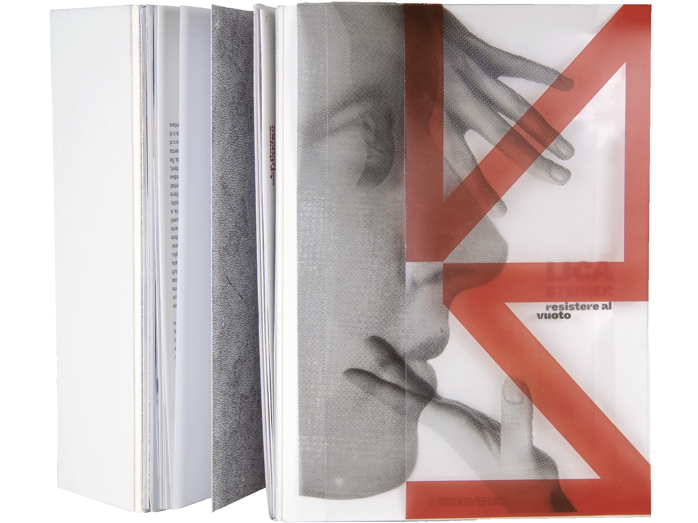
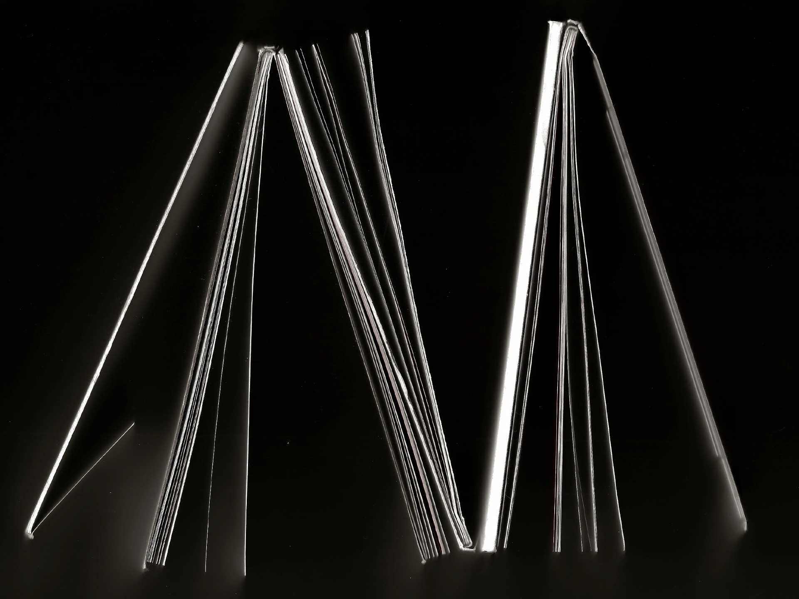
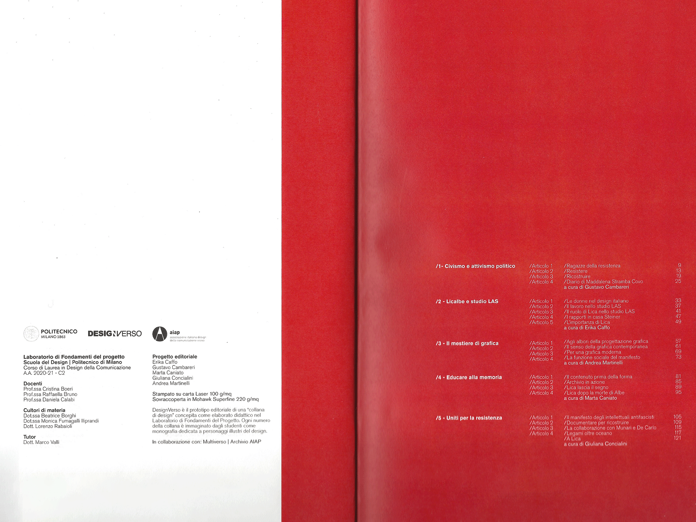
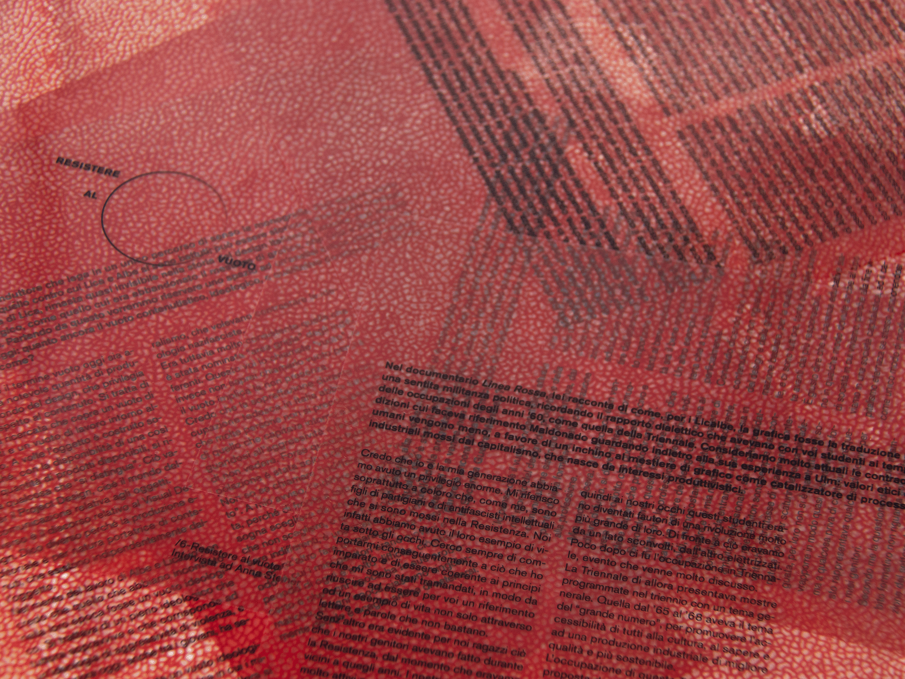
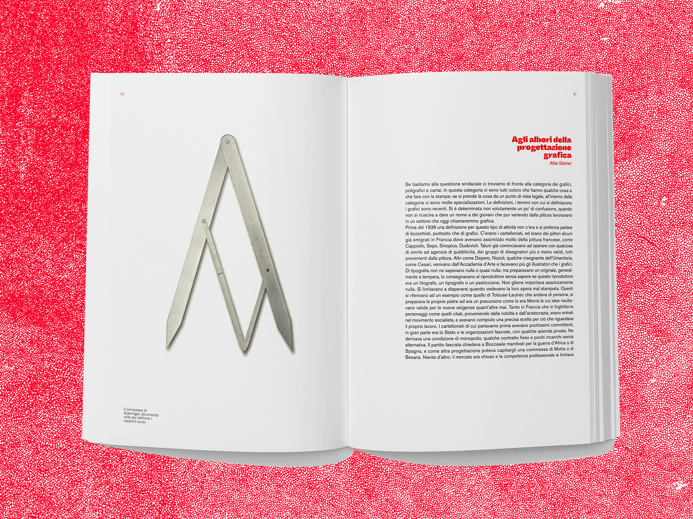
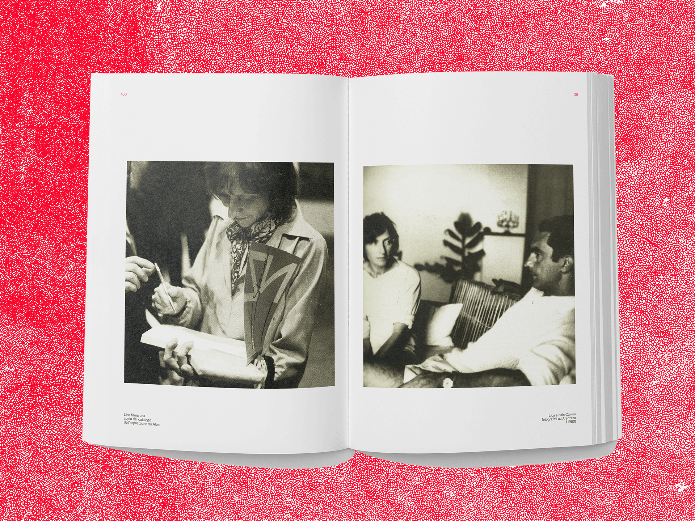
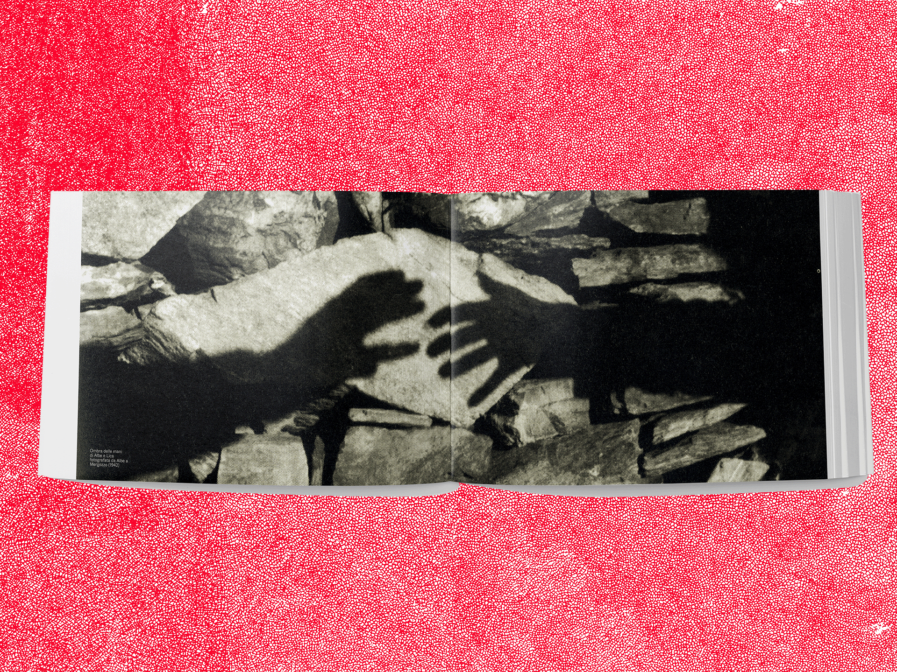
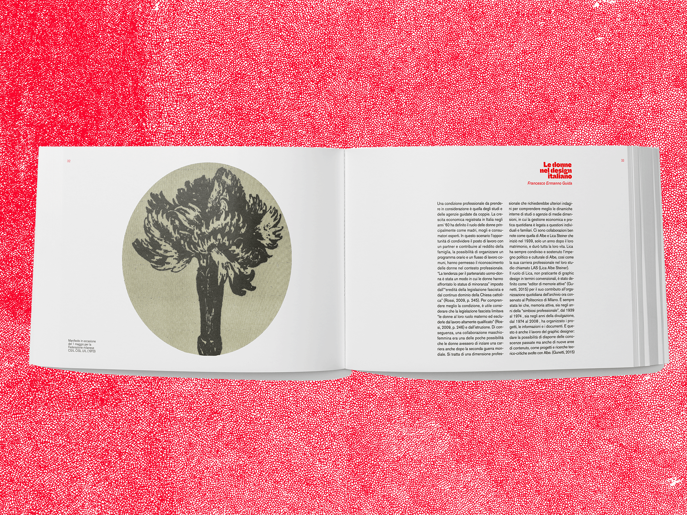
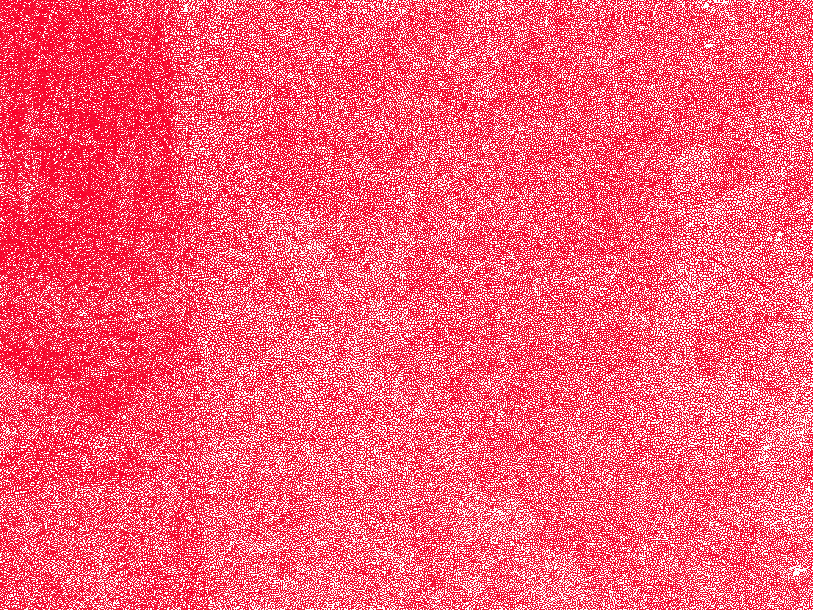

lica steiner ― resistere al vuoto is a monographic volume developed to bridge the historical gap regarding the life of lica steiner, graphic designer, partisan and wife of albe steiner, whose work was fundamental in the production of studio las. it was developed in collaboration with multiverso magazine as part of the designverso series, and includes an unpublished interview with anna steiner.
The core feature of the editorial project lies in the non-uniqueness of the reading direction: at the end of each chapter, in order to access the following one, it's necessary to rotate the magazine by ninety degrees, evoking through the physical gesture a metaphorical change of perspective, which is indispensable if you want to try to understand a multifaceted figure like lica.







